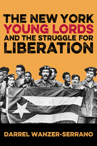

<body bgcolor="#FFFFFF" text="#000000" link="#0000FF" vlink="#CC0000" alink="#CC0000"><center><hr width="350" size="1" align="center" noshade>A landmark history of the New York Young Lords, and what their activism tells us about contemporary Latino/a politics<hr width="350" size="1" align="center" noshade><p><a href="https://cdcshoppingcart.uchicago.edu/Cart/ChicagoBook.aspx?ISBN=9781439912027&&PRESS=temple" target="_top">Buy this book!</a> | <a href="https://cdcshoppingcart.uchicago.edu/Cart/Cart.aspx?PRESS=temple" target="_top">View Cart</a> | <a href="https://cdcshoppingcart.uchicago.edu/Cart/Cart.aspx?PRESS=temple" target="_top">Check Out</a></p><p></p></center><!--none//--><h1>The New York Young Lords and the Struggle for Liberation</h1>
<h3>Darrel Wanzer-Serrano</h3>
<P>cloth 1-4399-1202-5 $84.50, May 15, <FONT COLOR=#990033>Available</FONT>
<br>paper 1-4399-1203-3 $29.95, May 15, <FONT COLOR=#990033>Available</FONT>
<br>Electronic Book 1-4399-1204-1 $29.95 <FONT COLOR=#990033>Available</FONT>
<BR> 244 pp
6x9
11&nbsp;figures 6&nbsp;halftones
</P><BLOCKQUOTE><I>"</i>The New York Young Lords and the Struggle for Liberation<i> is a thoroughly documented history of an iconic organization of the Puerto Rican diaspora. Darrel Wanzer-Serrano presents a sustained theoretical argument and well-contextualized account of the Young Lords’ origins and emergence. He draws from oral histories and memoirs to argue that the Young Lords, at their best, represented a creative and principled effort at uplifting society’s marginalized peoples. The writing attains eloquence and innovatively situates the Young Lords’ experience in recent social movements literature."</i> <br>&#151<b>Andrés Torres</b>, Lehman College, City University of New York, and co-editor (with José E. Velázquez) of <i>The Puerto Rican Movement</i></I></BLOCKQUOTE>
<P>The Young Lords was a multi-ethnic, though primarily Nuyorican, liberation organization that formed in El Barrio (Spanish Harlem) in July of 1969. Responding to oppressive approaches to the health, educational, and political needs of the Puerto Rican community, the movement’s revolutionary activism included organized protests and sit-ins targeting such concerns as trash pickups and lead paint hazards. The Young Lords advanced a thirteen-point political program that demanded community control of their institutions and land and challenged the exercise of power by the state and outsider-run institutions.
<P>In <I>The New York Young Lords and the Struggle for Liberation</I>, Darrel Wanzer-Serrano details the numerous community initiatives that advanced decolonial sensibilities in El Barrio and beyond. Using archival research and interviews, he crafts an engaging account of the Young Lords’ discourse and activism. He rescues the organization from historical obscurity and makes an argument for its continued relevance, enriching and informing contemporary discussions about Latino/a politics.
<BR>&nbsp;<h2>Excerpt</h2><P>Excerpt available at <a href="http://www.temple.edu/tempress">www.temple.edu/tempress</a></p>
<BR>&nbsp;<h2>Reviews</h2>
<p><i>"Darrel Wanzer-Serrano’s </i>The New York Young Lords and the Struggle for Liberation<i> relied on interviews, articles, and first-hand accounts to provide a rich history of the group."</i> <br>&#151<i><b>San Francisco Weekly</i></b>
<p><i>"Wanzer-Serrano offers both an important contribution and intervention to Puerto Rican, Latina/o, and Communication Studies by further contextualizing 'the critical engagement of the Young Lords' grassroots rhetoric and political actions.'... [W]hat Wanzer-Serrano is careful to offer here is not merely another historical analysis of the ways in which activism is performed (or enacted) but how decoloniality emerges, is imagined, and is lived through the words and actions of the Young Lords. Through extensive archival research, oral histories, and theoretical unpacking, Wanzer-Serrano's book situates the critical importance of the rhetoric behind the organizing work of the Young Lords."</i><br>&#151<i><b>CENTRO Voices</i></b>
<p><i>"Wanzer-Serrano offers a critical interpretation of the writings, speeches, and actions of The Young Lords Party in a way that emphasizes their geographic and socio-political situatedness.... </i>The New York Young Lords and the Struggle for Liberation<i> shares the story of The Young Lords Party in a refreshing way by employing a methodology that privileges their own voices, all while expanding conversations throughout various fields in the academy. In this, the work's importance cannot be understated as it is not merely a regurgitation of The Lords story but rather a conversation with them. For that...this work deserves praise."</i> <br>&#151<i><b>La Respuesta</i></b>
<p><i>"Wanzer-Serrano’s </i>The New York Young Lords and the Struggle for Liberation<i> engages intellectual history, rhetorical studies, and theories of (de)coloniality.... Wanzer-Serrano takes seriously the epistemic, psychological, and social outcomes from struggles that may at first glance appear unsuccessful. Ultimately, Wanzer-Serrano asks not only what we can learn about the Young Lords but also what we can learn from them.... At its heart </i>The New York Young Lords and the Struggle for Liberation<i> is a rhetorical reading of a historic moment...that can be quite significant to scholars and activists.... a vibrant text."</i> <br>&#151<i><b>Journal of American History</i></b>
<p><i>"[A] trenchant analysis of the work of the Young Lords in New York City from 1969 to 1976.... Wanzer-Serrano offers here a thorough, meticulous analysis of rhetorical and textual aspects of the Young Lords’ activism. In this regard, he admirably achieves his goal of bridging the divide between Puerto Rican and Latina/o Studies on the one hand and communication studies on the other.... Wanzer-Serrano proves particularly adept in putting forth intersectional analyses, the prime example being his chapter on the advocacy and leadership of women in the Young Lords.... Wanzer-Serrano has offered an impressive contribution to the burgeoning scholarship on Puerto Rican activism in mid to late twentieth-century New York.... At base, </i>The New York Young Lords and the Struggle for Liberation<i> is a call to look beyond the instrumental and transitory successes of community activism and consider the ways in which changing the terms of discourse can form a basis for future empowerment."</i> <br>&#151<i><b>Sociology of Race and Ethnicity</i></b>
<BR>&nbsp;<h2>Contents</h2><P>
<p>Acknowledgments
<br>Introduction: The Young Lords and the Rhetoric of Decoloniality
<p><b>Part I: History and Ideology</b>
<br>1. Origins and Optics: Remembering Colonialism, Nationalism, and Radicalism with the Young Lords
<br>2. Figural, Not Foundational: The Young Lords and Revolutionary Nationalism
<p><b>Part II: Decoloni al Praxis</b>
<br>3. “We Refused to Cave In”: Gender, Race, Class, and Decolonial Intersectionality in the Young Lords’ Liberation Politics
<br>4. Dirty Love: Collective Agency and Decolonial Tropicalization in the Garbage Offensive
<br>5. Decolonial Imaginaries: Rethinking “the People" in the Church Offensive
<p>Conclusion: Decoloniality in Practice
<br>Notes
<br>Index
</P><BR>&nbsp;<H2>About the Author(s)</H2>
<P><b>Darrel Wanzer-Serrano</b> is Assistant Professor of Communication Studies at The University of Iowa, and editor of <i>The Young Lords: A Reader</i>.</P>
<BR><H2>Subject Categories</H2>
<p><A HREF="/tempress/social.html" TARGET="_top">Community Organizing and Social Movements</a>
<BR><A HREF="/tempress/latino.html" TARGET="_top">Latino/a Studies</a>
<BR><A HREF="/tempress/history.html" TARGET="_top">History</a>
</p>
<p align="center"><a href="https://cdcshoppingcart.uchicago.edu/Cart/ChicagoBook.aspx?ISBN=9781439912027&&PRESS=temple" target="_top">Buy this book!</a> | <a href="https://cdcshoppingcart.uchicago.edu/Cart/Cart.aspx?PRESS=temple" target="_top">View Cart</a> | <a href="https://cdcshoppingcart.uchicago.edu/Cart/Cart.aspx?PRESS=temple" target="_top">Check Out</a></p><p><font face="Arial" size="1"><a href="copyright.html" onMouseOver="window.status='Web Copyright Policy';return true;" onMouseOut="window.status=''" title="Web Copyright Policy">&copy;</a> 2016 <a href="http://www.temple.edu" target="new" onMouseOver="window.status='Link to Temple University home page';return true;" onMouseOut="window.status=''" title="Link to Temple University home page">Temple University</a>. All Rights Reserved. http://www.temple.edu/tempress/titles/2346_reg.html</font></p>